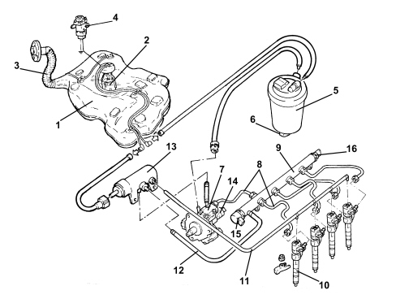

INTRODUCTION - FUEL TANK AND PIPES
- Path
- Descriptions > 10 ENGINE > 1040 FUEL TANK AND PIPES > INTRODUCTION - FUEL TANK AND PIPES
- Kind
- system description
- Applies to
- engines: 1.9 JTD 16v; all production periods
- Interactive page
- https://sloeber94.github.io/elrnDB-fCrm/en/#/194005496
Applies to: engines: 1.9 JTD 16v; all production periods
CONSTRUCTION SPECIFICATIONS
This fuel injection system uses an electronically controlled high injection pressure and a fuel supply method produced by one main injection and one or two pilot injections (depending on the engine operating conditions), electronically controlled by the injection control unit via the injector.
Pressure level is the basic parameter for optimising fuel consumption and exhaust fume levels.
The pilot injections make it possible to preheat the combustion chamber to avoid the pressure peak caused by rapid combustion and ensure smoother running.
Injection pressure regulation is made possible by the constructional features of the system, which is equipped with separate pressure pump and injectors, both managed by a control unit. In this way, injection pressure is independent of engine rotation speed.
The main features of the fuel feed system are as follows:
- high injection pressure (up to 1400 bar);
- injection pressure that can be modulated from 150 to 1400 bar under all engine operating conditions
- introduction of fuel up to 100 mm³/cycle within a speed range of 100 to 6000 rpm;
- precise injection control in terms of advance and duration;
- one or two pilot injections before TDC managed on the basis of rpm and engine load that allow the pressure in the combustion chamber to be distributed more evenly with a reduction in noise levels.
COMPOSITION
The fuel system is divided into a low pressure circuit and a high pressure circuit.
The low pressure circuit consists of:
- an auxiliary pump submerged in the tank;
- the fuel filter;
- the fuel return manifold pipe;
- the connecting pipes.
The high pressure circuit consists of:
- the pressure pump;
- the single fuel manifold pipe;
- the injectors;
- the connecting pipes.

1 - Fuel tank
2 - Submerged fuel assembly complete with level gauge control
3 - Fuel filler pipe
4 - Inertia switch
5 - Fuel filter filter element
6 - Water in fuel filter sensor
7 - Pressure pump
8 - High pressure pipes
9 - Single fuel manifold pipe (rail)
10 - Injectors
11 - Pipe from injectors to fuel return manifold pipe
12 - Return pipe from rail to fuel return manifold pipe
13 - Fuel return manifold pipe
14 - Fuel pressure regulator on pump
15 - Fuel pressure regulator on rail
16 - Fuel pressure sensor